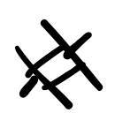
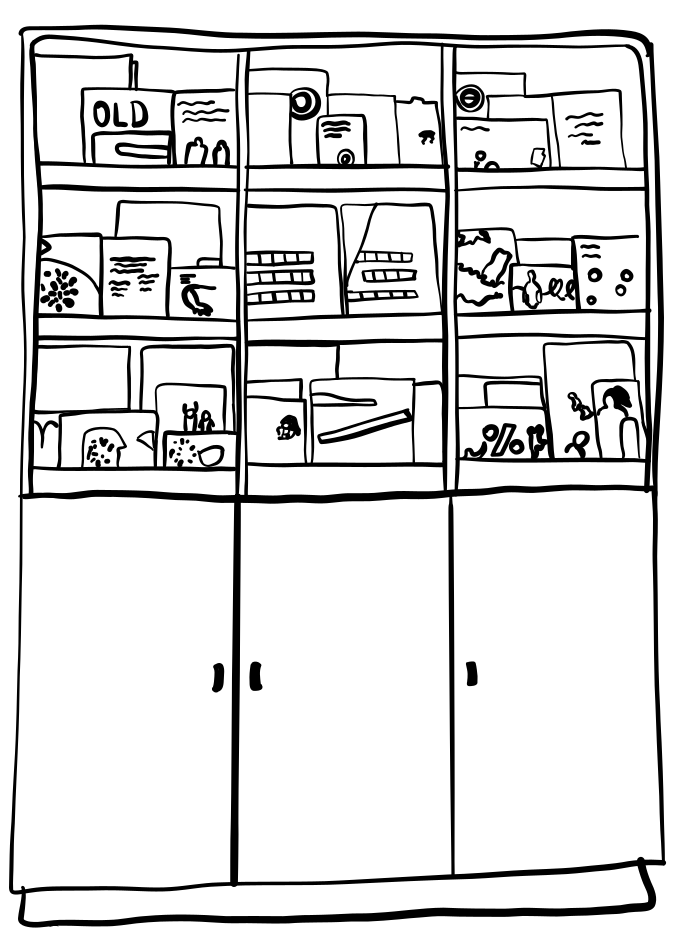

Maison de le Paix a une longue tradition d'aide aux sans-abri. L'asbl a été fondée en 1991 en tant qu'ancien foyer d'accueil pour hommes et femmes, avec une offre d'orientation à partir de 1996. Depuis 1998, Huis van Vrede gère depuis de nombreuses années l'opération Puerto - un logement accompagné pour les sans-abri. en collaboration avec le CAW Bruxelles. Les deux maisons d'accueil n'existent plus et ont reçu une nouvelle vocation sous la forme de maisons durables, gérées par SVK externe.
 En tant que centre reconnu d'accompagnement à domicile pour l'entretien du logement, l'asbl a vu le jour en janvier 2006. En 2017, Huis van Vrede a également conclu un partenariat avec Station Logement (Housing First Diogenes). A partir de 2023, l’asbl sera totalement autonome et réalisera ses missions de manière indépendante.